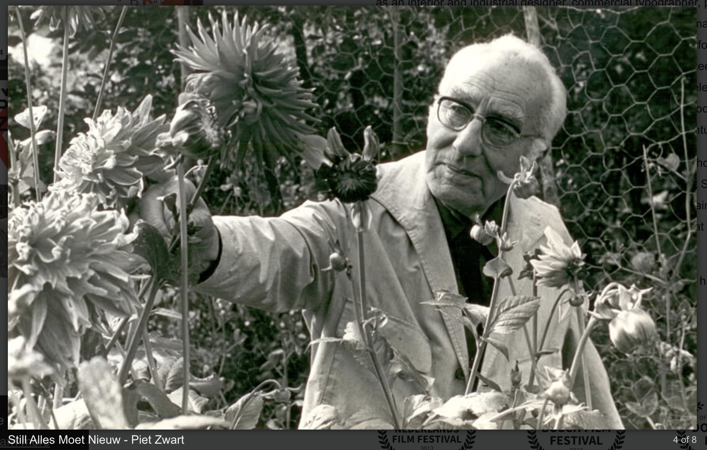

A
A pioneer of modern typography, designer Piet Zwart was influenced by
Constructivism and De Stijl. His influence shows in his work and in this
quote:...to make beautiful creations for the sake of their aesthetic
value will have no social significance tomorrow... Zwart worked as a
designer, typographer, photographer and industrial designer in the
Netherlands in the 1920s and 30s. Primarily working for the NKF Company,
he created many works of graphic design before retiring from the company
to spend the rest of his days as an interior and furniture designer.
Also influenced by the Arts and Crafts movement, Zwart began his
education at the School of Applied Arts in 1902. He spent most of his
career moonlighting as an architect and photographer, as well as a
designer and for several years he was very successful.
His design career came to a halt when he was arrested by German soldiers
in 1942. He was eventually released after the war, but the experience
affected him drastically. He spent the rest of his life primarily
working in interior design. His excellent use of color, typography,
composition and photography are reminiscent of the Bauhaus and his
influence on the future generations of graphic designers lives on
through the Piet Zwart Institute at the William de Kooning Academy.
